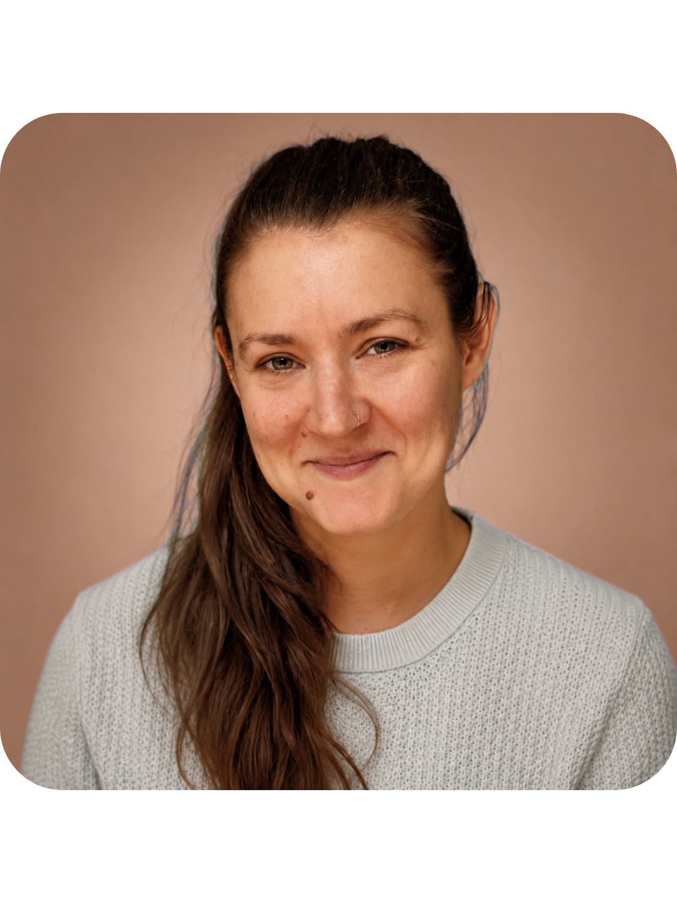

From childhood, I did what was expected. Shrunk my desires. Stayed small. When I moved to London and started chasing the things I actually wanted, something still felt off. I was moving forward, but my body wasn't. I was still frozen in the same cycles of self-criticism and self-sabotage, just in a different postcode.
Everything changed when I discovered the nervous system. Not as a concept, but as an experience. I realised my body wasn't resisting my dreams. It lacked the safety to receive them. The patterns I thought were personality were biology. The loops I couldn't break weren't character flaws: they were survival responses that had never been updated.
Through somatic work, I stopped fighting myself and started collaborating with my body. Building safety where fear existed. Something that felt like self-trust in the places where shame had been. That shift opened everything, and it's what I now do with the women I work with.
Nervous system practices and somatic meditations, free to follow and listen.